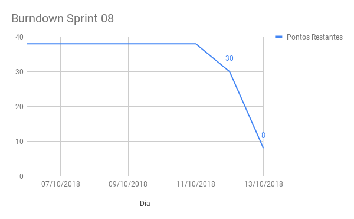
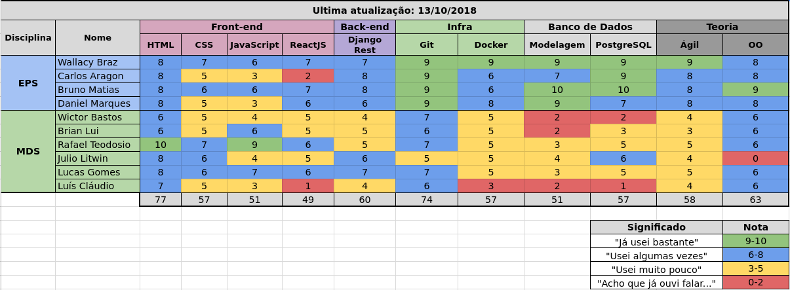

Sprint 08
Histórico da Revisão
| Data | Versão | Descrição | Autor |
|---|---|---|---|
| 06/10/2018 | 0.1 | Planejamento da sprint | Daniel Marques |
| 14/10/2018 | 1.0 | Resultado da sprint | Daniel Marques |
1. Introdução
Número da Sprint: 8
Data de Início: 06/10/2018
Data de Término: 13/10/2018
Duração: 7 dias
Pontos Planejados: 30
Pontos Adicionados (Dívida): 8
2. Papéis
Scrum Master: * Daniel Marques
Product Owner: * Carlos Aragon
Arquiteto: * Bruno Matias
DevOps: * Francisco Wallacy
Desenvolvedores: Brian Lui Julio Litwin Lucas Luís Cláudio Rafael Teodósio Wictor Girardi
3. Histórias Planejadas
As histórias podem ser vistas no backlog do produto.
3.1. EP01FE08US15 - Instalar o software (8 pontos)
3.1.1. Descrição
Eu, como administrador desejo instalar o sistema em uma maquina para ter acesso ao sistema.
3.1.2. Critério de Aceitação
- Deve permitir o acesso ao sistema no fim da instalação.
3.1.3. Responsáveis
- Bruno Matias
- Julio Litwin
3.2. EP01FE08US16 - Atualizar a aplicação (13 pontos)
3.2.1. Descrição
Eu, como administrador ou funcionário desejo atualizar aversão do sistema para utilizar a versão mais recente do software.
3.2.2. Critério de Aceitação
- Após a atualização o software deve estar na versão mais recente em produção.
3.2.3. Responsáveis
- Bruno Matias
- Lucas Gomes
- Rafael Teodósio
3.3. EP02FE09US17 - Gráfico por valor e tempo (8 pontos)
3.3.1. Descrição
Eu, como administrador ou funcionário desejo selecionar uma opção de análise financeira para ter uma visão de negócio mais ampla a partir da análise do valor gasto pelo tempo.
3.3.2. Critério de Aceitação
- O usuário deverá ver na dashboard o gráfico por valor total e tempo na tela inicial
3.3.3. Responsáveis
- Brian Lui
- Wictor Girardi
3.4. EP02FE09US19 - Gráfico por categoria e valor (1 pontos)
3.4.1. Descrição
Eu, como administrador ou funcionário desejo selecionar uma opção de análise financeira para ter uma visão de negócio mais ampla a partir da análise do valor gasto pela categoria do gasto.
3.4.2. Critério de Aceitação
- O usuário deverá ver na dashboard o gráfico por categoria e valor na tela inicial
3.4.3. Responsáveis
- Julio Litwin
- Luis Claudio
4. Histórias Adicionadas (Dívida)
4.1. EP02FE02US07 - Criar nota fiscal (8 pontos)
4.1.1. Descrição
Eu, como administrador ou funcionário desejo ler e armazenar os dados da nota fiscal a partir de pdf's nativos para poder gerenciar os gastos da empresa, assim, planejar as estratégias futuras.
4.1.2. Critério de Aceitação
- O usuário deve poder adicionar o arquivo PDF a ser criado a NF.
- A nota fiscal a ser adicionada deve ser nativa (conter texto).
- O sistema deve notificar o usuário sobre conclusão ou falha no processo.
4.1.3. Responsáveis
- Daniel Marques
- Lucas Gomes
- Wictor Girardi
5. Presença no Sprint Planning
| Presente | Membro |
|---|---|
| S | Brian Lui |
| S | Bruno Matias |
| S | Carlos Aragon |
| S | Daniel Marques |
| S | Francisco Wallacy |
| S | Julio Litwin |
| S | Lucas Gomes |
| S | Luís Cláudio |
| S | Rafael Teodósio |
| S | Wictor Girardi |
6. Resultado
| ID | História | Status | Pontos |
|---|---|---|---|
| EP01FE08US15 | Instalar o software | Não Concluído | 8 |
| EP01FE08US16 | Atualizar a aplicação | Concluído | 13 |
| EP02FE09US17 | Gráfico por valor e tempo | Concluído | 8 |
| EP02FE09US19 | Gráfico por categoria e valor | Concluído | 1 |
| EP02FE02US07 | Criar nota fiscal | Concluído | 8 |
Pontos concluídos: 30
Pontos de dívidas: 8
6.1. Burndown da Sprint

6.2. Velocity

Para visualizar a imagem ampliada, clique aqui.
6.3. Quadro de Conhecimentos

Para visualizar a imagem ampliada, clique aqui.
{kind=link}
6.4. Retrospectiva:
| Negativo | Positivo | Melhoria |
|---|---|---|
| Pareamento em trio não funcionou tão bem quanto pareamento em dupla nessa sprint | A maioria dos integrantes conseguiu entregar suas histórias | A equipe ser mais produtiva |
| Um integrante não correu atrás de terminar sua história | A maioria dos integrantes está correndo atrâs de aumentar o conhecimento nas tecnologias | |
| Perda de muito tempo com bugs da última versão da tecnologia Metabase | Aumento de conhecimento da tecnologia Docker e Metabase | |
| O launcher era mais complexo do que o esperado, causando dívida da us | Alguns integrantes focaram mais no projeto nessa sprint |
6.5. Retrospectiva do Scrum Master:
A sprint repetiu o ponto negativo da sprint passada (Sprint 07) de terminar história no último dia. Mesmo com a sprint começando no sábado (06/10/2018) os integrantes só foram começar a implementação das suas respectivas histórias na terça-feira (09/10/2018), assim, comprometendo a data de termino das histórias. O sprint review ocorreu o não comparecimento de alguns integrantes por motivos de terem prova na segunda-feira e morarem longe do local a onde ocorre o sprint review.
As duas histórias "EP02FE09US17 - Gráfico por valor e tempo" e "EP02FE09US19 - Gráfico por categoria e valor" foram mais difíceis de implementar do que o planejado, pois a últíma versão v0.30.4 do Metabase no Docker está com um bug ao tentar conectar com o banco SQLite. A solução encontrada foi verificar uma versão mais antiga que estava estável nesse quesito, que foi a versão v0.23.1.
A história "EP01FE08US15 - Instalar o software" não foi concluída nessa sprint por causa que foi necessária esperar a história "EP01FE08US16 - Atualizar a aplicação" ser finalizada, além de ter sido necessário mudar a linguagem da história inteira de C# para C++, sendo que o motivo da mudança foi a prevenção de ser aceito também em sistemas com Linux.
Ao todo a sprint foi uma evolução da sprint passada, pois foi dado um dificuldade maior para a equipe e somente uma história ficou como dívida para a próxima sprint. Os integrantes ganharam mais conhecimeto nas tecnologias e também na metodologia ágil.
6.6. Presença no Sprint Review
| Presente | Membro |
|---|---|
| N | Brian Lui |
| N | Bruno Matias |
| N | Carlos Aragon |
| S | Daniel Marques |
| N | Francisco Wallacy |
| S | Julio Litwin |
| S | Lucas Gomes |
| S | Luís Cláudio |
| S | Rafael Teodósio |
| S | Wictor Girardi |